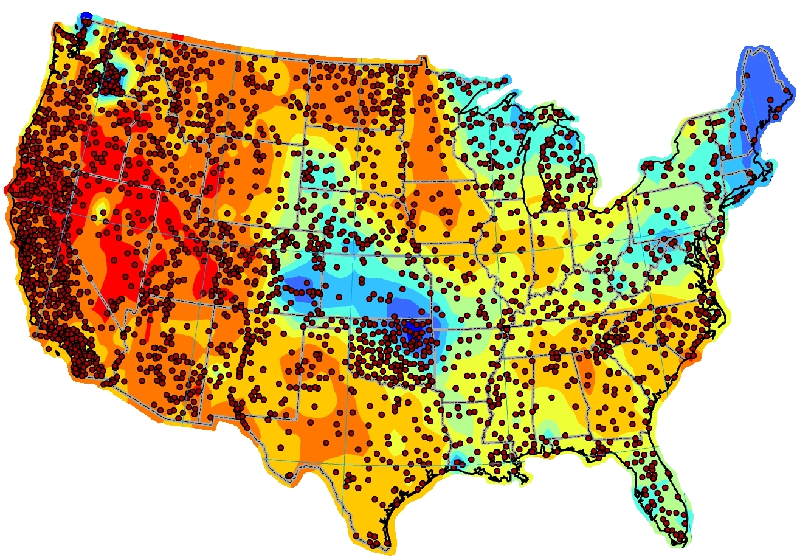

Supported by the U.S. Department of Energy’s SunShot Initiative, the NSRDB is a widely used and relied-upon resource. The database is managed and updated using the latest methods of research by a specialized team of forecasters at the National Renewable Energy Laboratory (NREL).

Evaluation of the NSRDB
This new report evaluates the NSRDB data, particularly the new approach and expanded data.
Click to Download